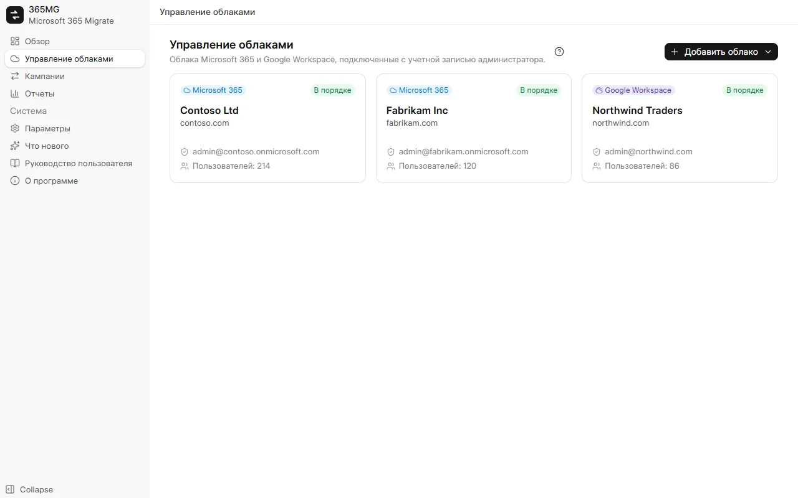
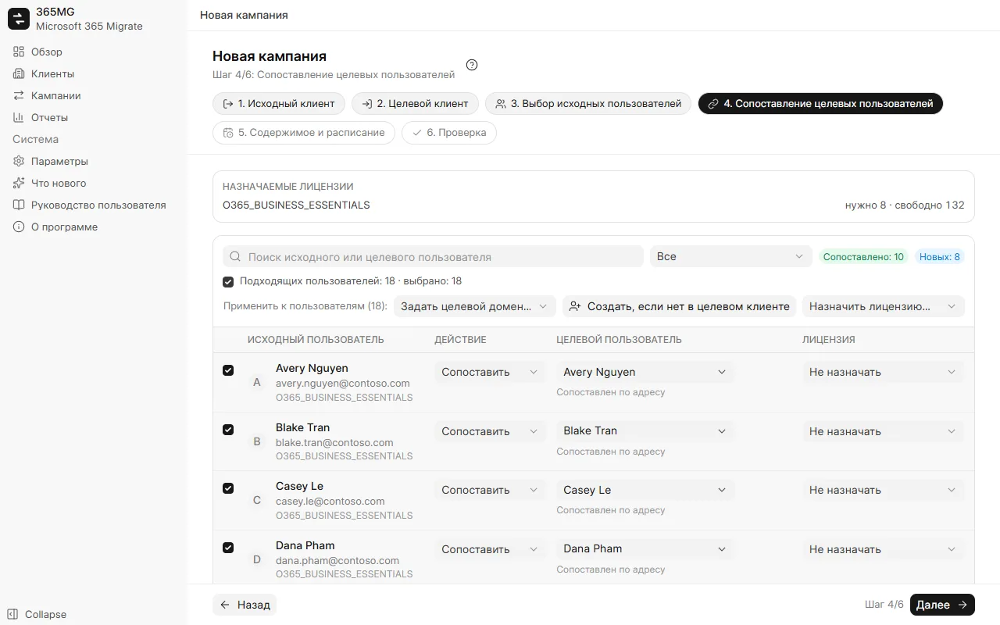
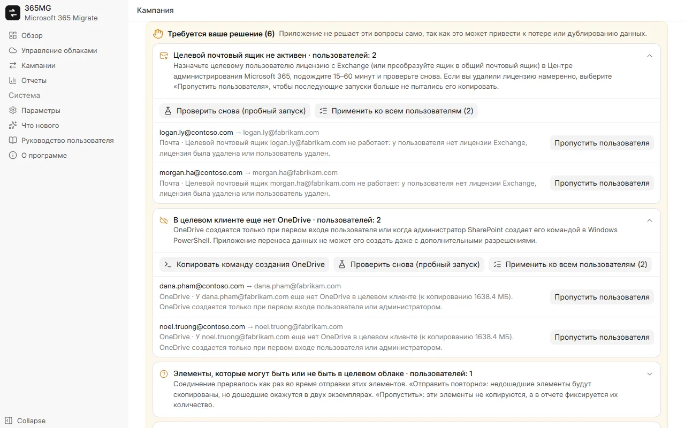

Руководство пользователя
От установки 365MG до итогового отчета. Каждый раздел содержит снимки экрана; пошаговые демонстрации воспроизводят основные задачи с анимированным курсором.
1. Установка
365MG работает в Windows 10 или 11 (64-разрядной) с Microsoft Edge WebView2, который уже входит в состав Windows. Установщик предоставляет автор: напишите по адресу ниже.
- Запустите
365MG_x.y.z_x64-setup.exeи следуйте указаниям установщика. - Откройте 365MG из меню «Пуск». Данные хранятся на этом компьютере в
%APPDATA%\com.tuanhd.365mg. - В разделе Параметры выберите язык интерфейса и временную папку на дополнительном диске.
2. Перед началом работы
- Учетная запись глобального администратора и в исходном, и в целевом клиенте.
- Достаточно лицензий с Exchange Online (и OneDrive) в целевом клиенте для создаваемых или сопоставляемых пользователей.
- Компьютер, который может оставаться включенным во время копирования, с быстрым и стабильным подключением: данные проходят через него.
- Дополнительный диск для временной папки; через нее проходят только файлы OneDrive размером от 4 МБ.
3. Добавление клиентов
- Откройте Клиенты и нажмите Добавить клиент.
- В открывшемся окне браузера войдите как глобальный администратор и примите разрешения.
- Вернувшись в 365MG, вы увидите домены клиента, результаты проверки разрешений и его лицензии. После любых изменений в центре администрирования нажмите Проверить разрешения.

4. Создание кампании
Кампания переносит группу пользователей из одного исходного клиента в один целевой. В мастере шесть шагов; заголовок, шаги и фильтры всегда видны вверху, а кнопки «Назад» / «Далее» / «Сохранить кампанию» — внизу.
- Исходный клиент и Целевой клиент: по одному шагу.
- Выбор исходных пользователей: отфильтруйте по лицензии, домену или состоянию, отметьте пользователей в списке и добавьте их в выбранные.
- Сопоставление целевых пользователей: 365MG предлагает целевого пользователя по адресу, псевдониму или отображаемому имени. Отметьте строки и примените сразу ко всем Задать целевой домен…, Создать, если нет в целевом клиенте или Назначить лицензию…; флажок над списком отмечает все строки, которые показывает фильтр.
- Содержимое и расписание: почта, OneDrive, контакты, календарь; пропуск нежелательной почты; запуск один раз или каждые N часов; число потоков.
- Проверка: проверьте сводку и нужные лицензии, затем нажмите Сохранить кампанию.

5. Подготовка целевых пользователей
На странице кампании кнопка Создать пользователей и назначить лицензии создает целевых пользователей, помеченных действием «Создать», и назначает каждому выбранную лицензию. Для строк с ошибкой показывается причина; устраните ее и запустите снова.
Новые пользователи получают случайный начальный пароль, который нужно сменить при первом входе. Экспортируйте пароли из меню ⋯ в CSV, передайте их пользователям, затем удалите файл.
6. Волны и пробные запуски
На вкладке Пользователи отметьте пользователей и нажмите Переместить в волну, чтобы разделить крупную миграцию. После этого панель запуска может запускать волны по одной; запуски по расписанию продолжают синхронизировать все уже начатые волны.
Пробный запуск (только подсчет) читает обе стороны и сообщает, сколько элементов, файлов и мегабайт скопирует реальный запуск. Он ничего не записывает в целевой клиент и также проверяет, что каждый целевой почтовый ящик и OneDrive существует.
7. Запуск, приостановка, продолжение
Панель запуска в верхней части каждой вкладки кампании показывает, что кампания делает сейчас и что будет дальше.
| Состояние | Что показано | Кнопки |
|---|---|---|
| Еще не запускалось | Расписание | Запустить сейчас, «Пробный запуск» |
| Копирование | Прошедшее время, выполняющиеся и ожидающие потоки | Приостановить |
| Приостановлено | Последний запуск | Продолжить (копирует остальное) |
| Синхронизировано | Время завершения и следующий запуск по расписанию | Запустить снова (получить новые данные), «Приостановить расписание» |
Приостановка останавливает потоки и расписание. Все скопированное остается в журналах, поэтому продолжение никогда не копирует дважды. Вкладка Ход копирования показывает каждый почтовый ящик и OneDrive со скоростью; поток, переставший продвигаться, перезапускается автоматически.
8. Требуется ваше решение
Когда запуск сталкивается с тем, что не должен решать сам, кампания показывает панель Требуется ваше решение, сгруппированную по типам, с пояснением и действиями для каждого пользователя.
| Тип | Что делать |
|---|---|
| Целевой почтовый ящик не работает | Назначьте пользователю лицензию (или преобразуйте ящик в общий почтовый ящик), подождите 15–60 минут и нажмите Проверить снова (пробный запуск). Если лицензия удалена намеренно, выберите Пропустить пользователя. |
| В целевом клиенте нет OneDrive | Нажмите Копировать команду создания OneDrive и выполните ее в Windows PowerShell как администратор SharePoint или попросите пользователя один раз войти; затем проверьте снова. |
| Целевой пользователь создан заново | Копировать заново с нуля в новый почтовый ящик или OneDrive либо пропустить. |
| Элементы с неизвестным результатом | Отправить повторно (уже дошедший элемент окажется в двух экземплярах) или Пропустить эти элементы. |
| В целевом клиенте меньше, чем скопировано | Обычно они намеренно удалены в целевом клиенте; подтвердите кнопкой Понятно. |

9. Почтовые группы
На вкладке Почтовые группы выберите исходные группы и нажмите Создать группы и добавить участников. Graph может создавать только группы Microsoft 365, поэтому списки рассылки и группы безопасности с поддержкой почты становятся группами Microsoft 365 с тем же псевдонимом, с доставкой во входящие участников и приемом почты от внешних отправителей. Участники без целевого пользователя перечисляются для каждой группы.
10. Отчеты
Раздел Отчеты показывает по каждой кампании исходные и скопированные объемы по пользователям и в целом, пользователей, требующих внимания, группы и примечания. Экспорт HTML создает одну страницу (светлая и темная тема, поиск и фильтр) и открывает ее; экспорт CSV выводит список пользователей или групп.
11. Параметры и языки
- Язык: девять языков, применяются сразу; арабский переключает макет на направление справа налево.
- Временная папка (spool): размещайте ее не на диске C.
- Считать поток зависшим через (минут): сколько минут без продвижения проходит до перезапуска потока (не более двух раз).
12. Обновления
В разделе Что нового перечислены изменения каждой версии. Когда выходит новая версия, это видно на боковой панели; кнопка Обновить до x.y.z загружает ее, проверяет подпись автора, закрывает приложение, устанавливает обновление и снова открывает его. Сначала приостановите выполняющиеся кампании; затем продолжите их.
13. Устранение неполадок
| Признак | Причина и решение |
|---|---|
| «Ожидание вступления в силу разрешений приложения переноса данных» | Новое приложение принимается Exchange и SharePoint в течение нескольких минут; запуск сам ждет до 30 минут. |
| Скорость падает, много сообщений об ограничении (throttling) | Exchange и SharePoint ограничивают нагрузку на почтовый ящик и на приложение. Больше потоков не ускорит один почтовый ящик; они помогают, когда ожидает много ящиков. |
| Счетчики в целевом клиенте меньше исходных | Проверьте примечания в отчете: пропущенная нежелательная почта, элементы, исключенные по решению, или почта, удаленная в целевом клиенте. |
| В целевом почтовом ящике уже есть почта | 365MG откажется копировать в него при первом запуске. Разрешайте это в кампании, только если в ящик не копировали другим средством. |